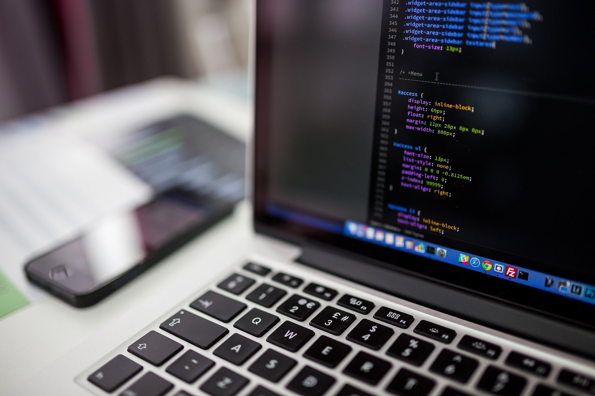

Una computadora es un dispositivo que puede realizar cálculos y tomar decisiones lógicas con mucha más rapidez que los humanos. Muchas de las computadoras personales de la actualidad pueden realizar miles de millones de cálculos en un segundo—más de lo que un humano puede realizar durante toda su vida. Las supercomputadoras ya se encuentran realizando miles de billones (trillones) de instrucciones por segundo. Para poner esto en perspectiva, una computadora de un trillón de instrucciones por segundo puede realizar en un segundo más de 100,000 cálculos para cada persona en el planeta. Y—estos "límites superiores" aumentan con rapidez.
Las computadoras procesan datos bajo el control de conjuntos de instrucciones llamadas programas de computadora. Estos programas guían a la computadora por conjuntos ordenados de acciones especificadas por personas llamadas programadores de computadora. Los programas que se ejecutan en una computadora se conocen como software. En este libro usted aprenderá sobre la metodología de programación clave de la actualidad que mejora la productividad del programador, con lo cual se reducen los costos de desarrollo de software—programación orientada a objetos.
Una computadora consiste de diversos dispositivos conocidos como hardware (por ejemplo: el teclado, pantalla, ratón, discos duros, memoria, DVD y unidades de procesamiento). Los costos de las computadoras disminuyen en forma dramática, debido a los rápidos desarrollos en las tecnologías de hardware y software. Las computadoras que podrín haber llenado salones extensos y costar millones de dólares hace unas décadas ahora se inscriben en chips de silicio más chicos que una uña, que cuestan tal vez unos cuantos dólares. Por ironía, el silicio es uno de los materiales más abundantes—es un ingrediente en la arena ordinaria. La tecnología de chips de silicio ha hecho la computación tan económica que hay más de mil millones de computadoras de propósito general en uso en todo el mundo, y se espera que esta cifra se duplique en los próximos años.
Los chips de computadora (microprocesadores) controlan inumerables dispositivos. Estos sistemas incrustados incluyen frenos antibloqueo en los autos, sistemas de navegación, electrodomésticos inteligentes, sistemas de seguridad en el hogar, teléfonos celulares y Spartphones, robots, intersecciones de tráfico inteligentes, sistemas para evitar colisiones, controladores de videojuegos y más. La inmensa mayoría de los microprocesadores que se producen cada año se incrustan en dispositivos que no son computadoras de propósito general.